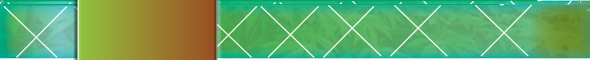
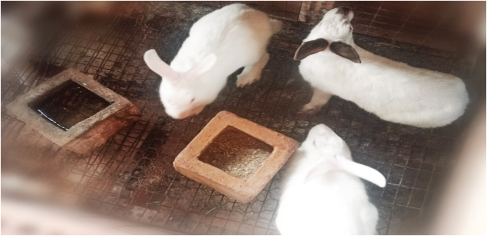

Chapter
Eight
Rabbit production
Introduction
In this chapter, you will learn about rabbit production principles and practices,
including rabbit breeds, rabbit housing, feeding, breeding, record keeping,
health care, and marketing of rabbits. The competencies developed will enable
you to perform general management practices in rabbit production enterprises.
Think
“A four-legged animal whose meat tastes like chicken.”
Importance of keeping rabbits
People may choose to keep rabbits for various purposes. Some of them decide to
keep rabbits for meat production. Choose breeds known for their rapid growth,
high feed conversion efficiency, and good meat quality, such as New Zealand and
California white. If one is interested in fur, one may choose breeds with high-quality
pelts, like the Rex or Angora. Figure 8.1 presents some rabbits in a group pen.
Figure 8.1: Rabbits in a cage